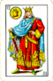

De: La Frikipedia, la enciclopedia extremadamente seria.
De: La Frikipedia, la enciclopedia extremadamente seria. De: La Frikipedia, la enciclopedia extremadamente seria.
José I Bonaparte (Corte, 7 de enero de 1768–Florencia, 28 de julio de 1844), llamado injustamente Pepe Botella o pepe Plazuelas, era abogado, diplomático y político francés, rey de Napolitanas (1806–1808) y, con posterioridad, rey de Aspaña (6 de julio de 1808–11 de diciembre de 1813, cuando los incivilizados aspañoles lo echaron a piedras).
Giuseppe Napoleone Buonaparte era el hermano mayor de Napoleón Bonaparte. Heredero de los Napoleones, una infame familia de capos o capados, fue siempre el tonto del pueblo. Estudió leyes en Pisa (para saber el verdadero significaso de esta palabra, buscar en un diccionario portugués), que entonces eran algo así como los diez mandamientos, pero quitando el de no matar. Se casó con Julie Clary (más conocida por la hermana Clary), hija de un comerciante de Marsella en 1794, teniendo con ella una hija igual de retrasada (llamada Ana).
En 1796 formó parte en la campaña de napoleón en Italia (las orgías dentro de las campañas). Al año siguiente, durante la I República Francesa, actuó como diplomático en Parma y en Roma. Durante la rebelión de su hermanito, hizo de enviado suyo firmando papeles de aquí a allá. En el 1806, Napoleón lo puso de rey de Nápoles.
Cunado Napoleón vio en 1808 que su hermano la estaba cagando, le puso de rey del peor sitio de todos: Aspaña. Pepito, muy oportuno él, llegó a l’ Aspaña en plena Güerra de la Independencia, poco después de la sublevación del 2 de mayo contra las tropas napolitanas.
Se ganó la confianza de los afrancesados o afranchuteados de mierda (vulgarmente llamados ilustrados españoles), pero no de las personas salvajes, que por aquel entonces tenían recién descubierta la guerra de guerrillas y les había molado tanto que era su actividad tradicional de los domingos y días festivos.
A Pepe no le hizo gracia ser llamado franchute de mierda, cosa que le marcó la infancia y le inició en el vicio de la bebida. La gente se mostró solidaria y no se metieron en ese tema. Pepe tuvo que salir por patas cuando las tropas francesas la cagaron en la batalla de Bailén. Un taco de aspañoles salvajes que no te quieren mucho con piedras en la mano acojonan a cualquiera.
Tuvo un par de percances en su camino y llegó a Francia sin su valioso equipaje (joyas de la corona españolas y obras de arte, nada importante). Cuando Napoleón fracasó se pilló en siguiente avión a Estados Unidos, donde se hizo una mansión en Filadelfia. Su mujer, su hija y su hermano, a los que había abandonado, permanecieron en Europa; pero no lo hechó de menos, pues estaba forrado, tenía una amante americana y era conde de Survilliers.
Cuando se cansó, se piró a Florencia, en la que estuvo tres años, hasta su triste muerte en 1844, cuando se abrió la cabeza con su bidé. Fue enterado en París, donde sirvió de abono para las zanahorias.
En Madrid fue llamado El rey plazuelas, puesto que abrió muchas plazas en la capital, principalmente derribando iglesias, conventos y demás locales de mala influencia. La más importante fue la plaza de Oriente del Palacio Real; los madrileños no se lo agradecieron nombrando la calle que separa la plaza del palacio, "calle de Bailén".
Su muerte fue un gran choque para los aspañoles, casi tanto como la de Franco (que hay gente que lloró y todo). Su hija se casó con un maricón con bigote. Fueron construídas varias estatuas de Pepe, por expreso deseo de los madrileños, que posteriormente las destrozaban. Fue en Valencia cuando a alguien se le ocurrió quemarlas. Desde entonces, todos los años se celebran los Fallos en honor al deporte de quemar a Pepes de madera. Su mujer se metió a monja y falleció en su cama, al no poder resistir un orgasmo de verdad, cuando pensaba en Dios, como hacen todas las monjas. Sus sobrinos, Franco y Hitler, llegaron democráticamente al trono de sus respectivos países.
|  | Reyes de España | |
|---|---|---|
| Luis I » Fernando VI » Carlos III » Carlos IV » Fernando VII » José I Napoleón » Isabelota II » Amadeo I » Alfonso XII » Alfonso XIII » Magneto I » Felipe VI |
Autor(es):